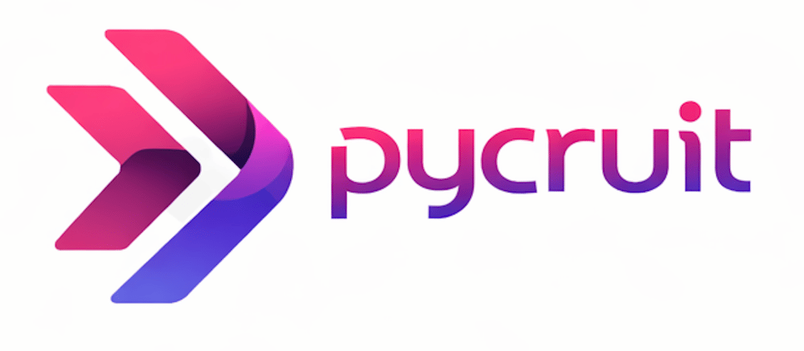
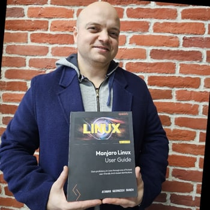

Beschreiben Sie Ihre offene Stelle. Sie bekommen kostenlos eine Marktanalyse mit ersten passenden Kandidaten.
Sie schreiben mit einem KI-Agenten von pycruit. Ihre Angaben nutzen wir nur für Ihre Marktanalyse. Mehr dazu in unseren Nutzungsbedingungen und im Datenschutzhinweis.
Am schnellsten geht es im Chat oben. Wenn Sie lieber reden, tippen Sie auf das Mikrofon und sprechen direkt mit unserer KI. Eine fertige Anzeige können Sie auch hochladen.
Unsere Suchagenten schauen sich den Markt für Ihre Stelle an. Per E-Mail bekommen Sie die Analyse mit ersten passenden Kandidaten und unsere ehrliche Einschätzung, wie gut sich die Stelle besetzen lässt. Das kostet Sie nichts.
Wenn Sie wollen, legen wir los. Ab dann kümmert sich ein Recruiter aus unserem Team um Ihre Stelle, zusammen mit den Suchagenten. Bezahlt wird erst, wenn Sie jemanden einstellen: 20 % des Bruttojahresgehalts.
Danach wissen Sie, wie schwer die Stelle zu besetzen ist und warum.
Kostenlos und unverbindlich, per E-Mail.
Die Suchagenten legen los, sobald Ihre Stelle im Chat steht. Auf einen Termin müssen Sie dafür nicht warten.
Mit Kandidaten spricht bei uns immer jemand aus dem Team. Wir kommen selbst aus dem Recruiting, aus Agenturen und Inhouse-Teams.
Sie sehen sofort erste passende Profile aus Ihrem Umkreis, anonym. Gefallen sie Ihnen, sprechen wir sie für Sie an.
In Ihrer Statustabelle sehen Sie, wen wir angesprochen haben und wie es steht. Auf Wunsch kommt ein kurzer Statusbericht per Mail. Namen und Unterlagen sehen Sie, sobald ein Kandidat zustimmt.
Fragen zu uns oder zum Ablauf klären wir gern persönlich. 20 Minuten reichen meistens.
„Eines der besten Unternehmen der Branche, mit denen ich bis dato gearbeitet habe. Sorgfältig ausgewählte und passgenaue Kandidaten. Immer wieder gern!“
„Wir pflegen seit einigen Monaten eine intensive Zusammenarbeit mit Christian und konnten unsere Belegschaft mit seiner Hilfe um 10% vergrößern.“
„Christian ist ein wirklich guter Berater. Er half mir bei der korrekten und detaillierten Marktanalyse sowie mit Empfehlungen, wie ich in Bezug auf meine Geschäftsziele vorgehen soll.“

Atanas Georgiev Rusev„Ich kann Christian voller Überzeugung weiterempfehlen! Wenn ich die Zusammenarbeit in drei Worten beschreiben müsste, wären das: erfolgreich, hilfreich und nett.“
Die Marktanalyse kostet nichts. Ein Honorar fällt erst an, wenn Sie jemanden über uns einstellen. Es beträgt 20 % des Bruttojahresgehalts. Die Bedingungen bekommen Sie mit der Auftragsbestätigung.
Nein. Wir suchen erst, wenn Sie uns ausdrücklich beauftragen.
Ein Recruiter aus unserem Team. Die Suchagenten finden die Profile, das Gespräch führt immer ein Mensch.
Wir brauchen sie für die Marktanalyse und um Ihre Anfrage zu bearbeiten. Details stehen im Datenschutzhinweis.
Ja. Es sind echte Profile aus Ihrem Umkreis, die unsere Suchagenten gefunden haben. Wir zeigen sie anonym, ohne Namen und ohne Arbeitgeber. Beides erfahren Sie erst, wenn ein Kandidat zugestimmt hat.
Helferjobs und gewerbliche Stellen, zum Beispiel im Lager, in der Produktion oder im Fahrdienst. Wir suchen Fach- und Führungskräfte mit Ausbildung oder Studium.
Die Marktanalyse ist kostenlos. Ob wir danach suchen, entscheiden Sie.